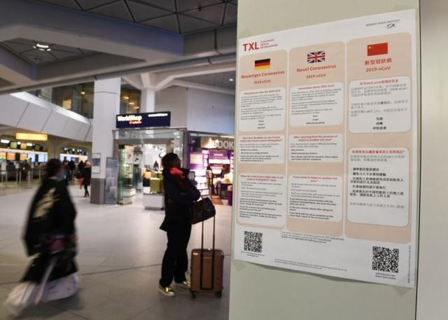
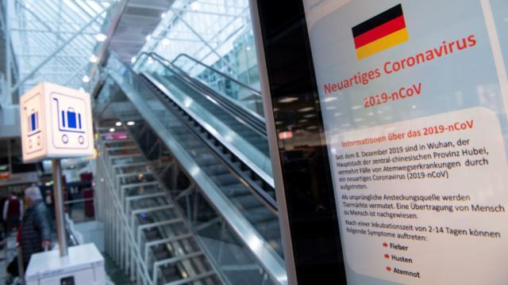

确诊破千仍零病亡背后：德国防疫的真相是怎样的？
原文链接 备份链接 图片来源：图虫 特约作者：钱伯彦 “ 德国所有医保机构年均380亿欧元的支出在欧洲一枝独秀，远超法国的230亿欧元和英国的140亿欧元。 ” 新冠病毒加速肆虐老迈的欧洲大陆。 就公开的确诊数而言，意大利一度超越韩国成海 …
体坛周报全媒体驻德国记者 杨子江
在度过了一个令我终身难忘的春节假期之后，2月28日凌晨2点30分，我们全家登上了国航961航班，从北京飞回慕尼黑，从一个疫区飞向了另一个疫区。3月13日晚上21点，儿子和女儿都上床安睡，我们也恰恰结束了14天居家隔离的日子，我坐在电脑前整理思绪纪录这一段难忘的历程。

曾几何时，我“最遗憾”的事情是错过了2003年的非典，那时候我还是单身，平均每年至少要回国两次的，竟然与非典擦肩而过，没有感受到当时的气氛。然而，让我没想到的是，17年后，我切身体会到了新冠病毒的残酷。1月18日到达天津岳父母家之后不久，新冠人传人的消息就尽人皆知了，于是一直到2月28日，除了到小区门口取一下快递，基本上没离开家门，向儿子许诺的什么淘气堡、大熊猫、中国各种各样的美食，全都打了水漂，太太更是在临走当天遗憾地表示，这次回来就没吃到她喜欢吃的煎饼果子和老豆腐。我则跟孩子的姨夫开玩笑说，你们不用去德国就体验到了在德国的生活——糟糕的物流，没有什么娱乐活动只能宅在家里，没有外卖，没有美食……
德国首例新冠确诊于1月28日，在我们所在的巴伐利亚州，但当时德国还并不是重点疫区，几乎全世界的目光都聚集在中国。说实话，我和爱人对德国的医疗体系是很有信心的，我们毕竟在那里生活了20年的时间。最近的一次和医院打交道是在女儿出生之后第三周，在儿科医生那里被检测出甲状舌管囊肿导致呼吸困难，结果当时就来了三辆救护车——8名医务人员挤到了儿科医生那里处理病情，最后确认这么小的孩子，纽伦堡地区无法做这种手术，救护车拉着就给送到了慕尼黑大学附属医院的ICU病房。
德国的ICU病房是不允许陪护的，即便女儿还没满月，太太也不能留在病房。不过大学附属医院还是在医院外给我太太安排了一个免费单间，方便她每天去看望孩子。手术之后，我们又转到菲尔特（对就是谢晖效力过的那个菲尔特）儿科医院观察了很长一段时间，直到女儿恢复健康平安出院，没有因为女儿的病花一分钱，太太也承认她当时很紧张，但晚上休息的还不错，因为没有孩子在身边哭，倒是孩子出院之后，每天晚上哭闹吵得太太休息不好。



德国的疫情的确是不断的在扩大，我们也深信德国人不会像中国人那样自觉隔离，所以我们也早早为返回德国做了准备：当时在国内口罩已经脱销了，我就在德国Ebay上买了10个FFP3等级的口罩，这种口罩是欧标的，网传比N95的防护能力还强，是N99级别的，能过滤99%的病毒。当时意大利的疫情已经很严重了，网上口罩的价格已经炒了上去，10个29.95欧元，不包邮，邮费3.9欧，合计33.85拿下，贵是贵了点，但好歹还承受的起，毕竟德国人还对口罩不屑一顾，价钱高其实是很多海外华人为支援武汉扫货给抬上去的。如今看来，提前购买口罩实在是一个很英明的决定，如今这种口罩一个大概要卖25欧元左右——奸商不仅仅在中国才有。
这中间还有一个小插曲，我在国内的时候订的货，卖家以迅雷不及掩耳之势就用UPS发了货，我越洋电话联系UPS让放到邻居家是各种的不顺利，即便在1、2月期间国内物流一塌糊涂的时候，服务也远远好过UPS和大灰狼DHL。
10个其实并不算少，首先我德国家住在郊外，远离城市中心，也没有人流密集的地方，我也没打算去医院看望病人，疫情爆发之后最大的社交活动就是在超市购物；太太两年的带薪产假还没休完，也不用去单位，在家很安全；孩子们，当时想的是，疫情真发作了，就宅在家里吧，难道还要去放风？简而言之，这10个口罩就是为我一个人抛头露面准备的，购物看球用——这年头，口罩都是奢侈品，在国内我除了去小区门口取快递就没出过门，一个3M的N95戴了一个月，这10个FFP3，我是计划用半年的，25欧元一个的口罩，舍不得扔啊。想想德国一次次的扣掉瑞士的医疗用品，我心有余悸地看了一眼身边从国内带的那100个一次性的外科口罩，有一种当年万元户的充实感。

原文链接 备份链接 图片来源：图虫 特约作者：钱伯彦 “ 德国所有医保机构年均380亿欧元的支出在欧洲一枝独秀，远超法国的230亿欧元和英国的140亿欧元。 ” 新冠病毒加速肆虐老迈的欧洲大陆。 就公开的确诊数而言，意大利一度超越韩国成海 …
原文链接 备份链接 澎湃新闻记者 南博一 随着新冠病毒开始在欧洲蔓延，口罩等防护物资成为了稀缺之物。一些国家开始禁止对外出口防护物资，一些国家的原材料渠道被因此切断，各国之间矛盾频发。 据《新苏黎世报周日版》( NZZ am …
原文链接 备份链接 图片来源：新苏黎世报周日版 “ 瑞士国内几乎不生产任何医用物资，通常从德国购买。 ” 《新苏黎世报周日版》7日报道，一辆属于瑞士公司的卡车在前往瑞士途中被德国海关拦截，车上有24万个防护口罩。瑞士联邦经济事务秘书处指 …
原文链接 备份链接 题图来自网络 昨天我们给大家介绍了疫情下的美国的真实情况，今天我们移步到德国。截至3月7日晚，德国共有15个州（共16）出现新冠状肺炎，确诊847例，无死亡。 疫情下的德国纪实 文／大梨 在这场对抗新冠病毒的战争中，武 …
原文链接 备份链接 现在校园里还没有人戴口罩，但国内的亲人总是打电话说美国疫情严重，出门一定要戴口罩，这让他非常为难。 文｜李 莹 今年春节，我到美国旅游，结果因为新冠肺炎疫情，回程航班被取消了……一言难尽。这是我滞留美国的第42天，西 …